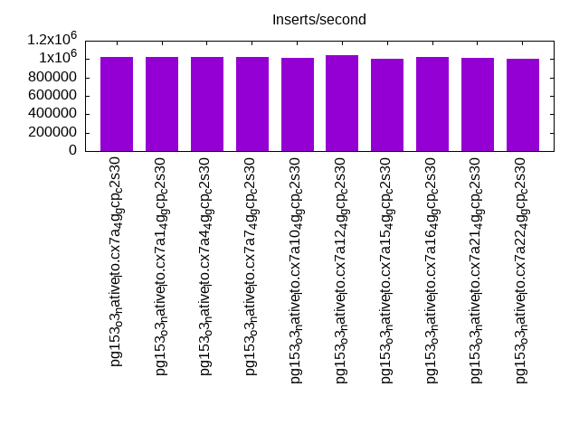
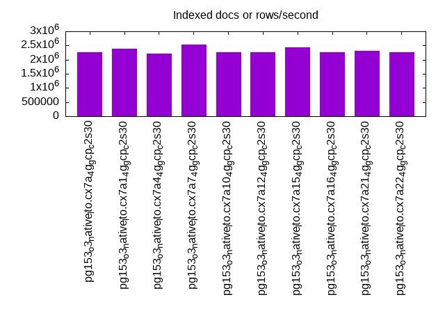
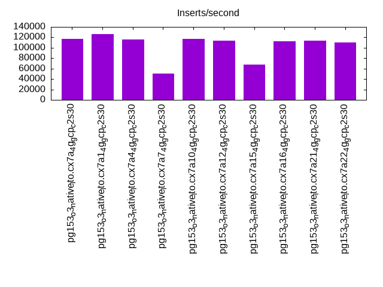
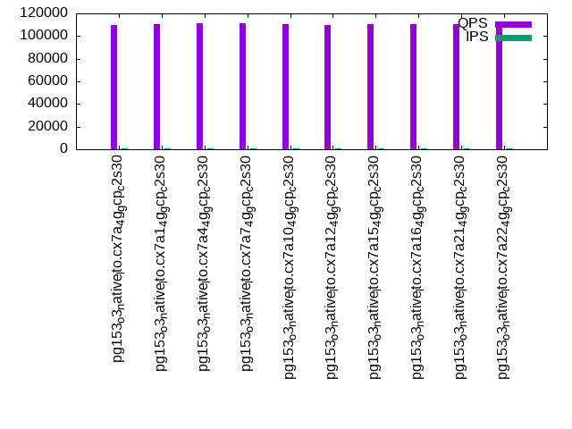
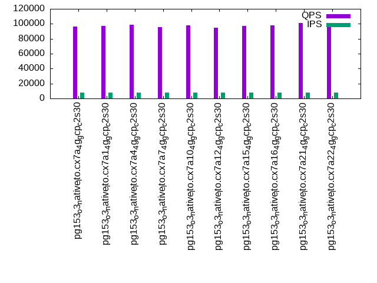

This is a report for the insert benchmark with 160M docs and 8 client(s). It is generated by scripts (bash, awk, sed) and Tufte might not be impressed. An overview of the insert benchmark is here and a short update is here. Below, by DBMS, I mean DBMS+version.config. An example is my8020.c10b40 where my means MySQL, 8020 is version 8.0.20 and c10b40 is the name for the configuration file.
The test server is a c2-standard-30 with 15 cores, hyperthreads disabled, 120G RAM and XFS with SW RAID 0 across 4 NVMe SSD. The benchmark was run with 8 clients and there were 1 or 3 connections per client (1 for queries or inserts without rate limits, 1+1 for rate limited inserts+deletes). It uses 8 tables, 1 per client. It loads 20M rows per table without secondary indexes, creates secondary indexes, then inserts 100M rows per table with a delete per insert to avoid growing the table. It then does 3 read+write tests for 3600s each that do queries as fast as possible with 100, 500 and then 1000 inserts/second/client concurrent with the queries. There are also deletes to match the inserts and avoid growing the table. The database is cached by the OS but not by Postgres. Clients and the DBMS share one server. The per-database configs are in the per-database subdirectories here.
The tested DBMS are:
The numbers are inserts/s for l.i0 and l.i1, indexed docs (or rows) /s for l.x and queries/s for q*.2. The values are the average rate over the entire test for inserts (IPS) and queries (QPS). The range of values for IPS and QPS is split into 3 parts: bottom 25%, middle 50%, top 25%. Values in the bottom 25% have a red background, values in the top 25% have a green background and values in the middle have no color. A gray background is used for values that can be ignored because the DBMS did not sustain the target insert rate. Red backgrounds are not used when the minimum value is within 80% of the max value.
| dbms | l.i0 | l.x | l.i1 | q100.1 | q500.1 | q1000.1 |
|---|---|---|---|---|---|---|
| pg153_o3_native_lto.cx7a_4g_gcp_c2s30 | 1025641 | 2254930 | 116788 | 110022 | 102118 | 96333 |
| pg153_o3_native_lto.cx7a1_4g_gcp_c2s30 | 1019108 | 2389552 | 126223 | 110812 | 103166 | 97462 |
| pg153_o3_native_lto.cx7a4_4g_gcp_c2s30 | 1019108 | 2223611 | 116195 | 111242 | 105146 | 98928 |
| pg153_o3_native_lto.cx7a7_4g_gcp_c2s30 | 1019108 | 2541270 | 50913 | 111155 | 103205 | 95899 |
| pg153_o3_native_lto.cx7a10_4g_gcp_c2s30 | 1012658 | 2254930 | 117543 | 110805 | 103338 | 97585 |
| pg153_o3_native_lto.cx7a12_4g_gcp_c2s30 | 1038961 | 2254930 | 114058 | 109561 | 101304 | 94993 |
| pg153_o3_native_lto.cx7a15_4g_gcp_c2s30 | 1000000 | 2425758 | 67232 | 110604 | 103253 | 96857 |
| pg153_o3_native_lto.cx7a16_4g_gcp_c2s30 | 1025641 | 2254930 | 112202 | 110158 | 103515 | 97862 |
| pg153_o3_native_lto.cx7a21_4g_gcp_c2s30 | 1012658 | 2320290 | 113572 | 110292 | 105614 | 100960 |
| pg153_o3_native_lto.cx7a22_4g_gcp_c2s30 | 1006289 | 2254930 | 109890 | 110903 | 105440 | 100668 |
This table has relative throughput, throughput for the DBMS relative to the DBMS in the first line, using the absolute throughput from the previous table. Values less than 0.95 have a yellow background. Values greater than 1.05 have a blue background.
| dbms | l.i0 | l.x | l.i1 | q100.1 | q500.1 | q1000.1 |
|---|---|---|---|---|---|---|
| pg153_o3_native_lto.cx7a_4g_gcp_c2s30 | 1.00 | 1.00 | 1.00 | 1.00 | 1.00 | 1.00 |
| pg153_o3_native_lto.cx7a1_4g_gcp_c2s30 | 0.99 | 1.06 | 1.08 | 1.01 | 1.01 | 1.01 |
| pg153_o3_native_lto.cx7a4_4g_gcp_c2s30 | 0.99 | 0.99 | 0.99 | 1.01 | 1.03 | 1.03 |
| pg153_o3_native_lto.cx7a7_4g_gcp_c2s30 | 0.99 | 1.13 | 0.44 | 1.01 | 1.01 | 1.00 |
| pg153_o3_native_lto.cx7a10_4g_gcp_c2s30 | 0.99 | 1.00 | 1.01 | 1.01 | 1.01 | 1.01 |
| pg153_o3_native_lto.cx7a12_4g_gcp_c2s30 | 1.01 | 1.00 | 0.98 | 1.00 | 0.99 | 0.99 |
| pg153_o3_native_lto.cx7a15_4g_gcp_c2s30 | 0.98 | 1.08 | 0.58 | 1.01 | 1.01 | 1.01 |
| pg153_o3_native_lto.cx7a16_4g_gcp_c2s30 | 1.00 | 1.00 | 0.96 | 1.00 | 1.01 | 1.02 |
| pg153_o3_native_lto.cx7a21_4g_gcp_c2s30 | 0.99 | 1.03 | 0.97 | 1.00 | 1.03 | 1.05 |
| pg153_o3_native_lto.cx7a22_4g_gcp_c2s30 | 0.98 | 1.00 | 0.94 | 1.01 | 1.03 | 1.05 |
This lists the average rate of inserts/s for the tests that do inserts concurrent with queries. For such tests the query rate is listed in the table above. The read+write tests are setup so that the insert rate should match the target rate every second. Cells that are not at least 95% of the target have a red background to indicate a failure to satisfy the target.
| dbms | q100.1 | q500.1 | q1000.1 |
|---|---|---|---|
| pg153_o3_native_lto.cx7a_4g_gcp_c2s30 | 797 | 3988 | 7967 |
| pg153_o3_native_lto.cx7a1_4g_gcp_c2s30 | 798 | 3987 | 7976 |
| pg153_o3_native_lto.cx7a4_4g_gcp_c2s30 | 798 | 3987 | 7973 |
| pg153_o3_native_lto.cx7a7_4g_gcp_c2s30 | 797 | 3988 | 7976 |
| pg153_o3_native_lto.cx7a10_4g_gcp_c2s30 | 797 | 3988 | 7976 |
| pg153_o3_native_lto.cx7a12_4g_gcp_c2s30 | 797 | 3987 | 7976 |
| pg153_o3_native_lto.cx7a15_4g_gcp_c2s30 | 798 | 3987 | 7978 |
| pg153_o3_native_lto.cx7a16_4g_gcp_c2s30 | 797 | 3988 | 7969 |
| pg153_o3_native_lto.cx7a21_4g_gcp_c2s30 | 797 | 3988 | 7976 |
| pg153_o3_native_lto.cx7a22_4g_gcp_c2s30 | 797 | 3988 | 7976 |
| target | 800 | 4000 | 8000 |
l.i0: load without secondary indexes. Graphs for performance per 1-second interval are here.
Average throughput:
Insert response time histogram: each cell has the percentage of responses that take <= the time in the header and max is the max response time in seconds. For the max column values in the top 25% of the range have a red background and in the bottom 25% of the range have a green background. The red background is not used when the min value is within 80% of the max value.
| dbms | 256us | 1ms | 4ms | 16ms | 64ms | 256ms | 1s | 4s | 16s | gt | max |
|---|---|---|---|---|---|---|---|---|---|---|---|
| pg153_o3_native_lto.cx7a_4g_gcp_c2s30 | 98.174 | 1.750 | 0.056 | 0.007 | 0.011 | 0.003 | 0.377 | ||||
| pg153_o3_native_lto.cx7a1_4g_gcp_c2s30 | 98.238 | 1.681 | 0.060 | 0.007 | 0.012 | 0.002 | 0.570 | ||||
| pg153_o3_native_lto.cx7a4_4g_gcp_c2s30 | 97.837 | 2.087 | 0.053 | 0.009 | 0.013 | 0.002 | 0.418 | ||||
| pg153_o3_native_lto.cx7a7_4g_gcp_c2s30 | 97.598 | 2.309 | 0.062 | 0.020 | 0.009 | 0.002 | 0.391 | ||||
| pg153_o3_native_lto.cx7a10_4g_gcp_c2s30 | 97.958 | 1.967 | 0.052 | 0.009 | 0.012 | 0.002 | 0.637 | ||||
| pg153_o3_native_lto.cx7a12_4g_gcp_c2s30 | 97.860 | 2.081 | 0.051 | 0.004 | 0.002 | 0.002 | 0.639 | ||||
| pg153_o3_native_lto.cx7a15_4g_gcp_c2s30 | 97.698 | 2.154 | 0.116 | 0.019 | 0.012 | 0.001 | 0.650 | ||||
| pg153_o3_native_lto.cx7a16_4g_gcp_c2s30 | 97.985 | 1.941 | 0.050 | 0.009 | 0.013 | 0.002 | 0.788 | ||||
| pg153_o3_native_lto.cx7a21_4g_gcp_c2s30 | 97.874 | 2.047 | 0.056 | 0.010 | 0.012 | 0.001 | 0.488 | ||||
| pg153_o3_native_lto.cx7a22_4g_gcp_c2s30 | 97.828 | 2.099 | 0.053 | 0.010 | 0.007 | 0.003 | 0.695 |
Performance metrics for the DBMS listed above. Some are normalized by throughput, others are not. Legend for results is here.
ips qps rps rmbps wps wmbps rpq rkbpq wpi wkbpi csps cpups cspq cpupq dbgb1 dbgb2 rss maxop p50 p99 tag 1025641 0 0 0.0 5111.7 407.8 0.000 0.000 0.005 0.407 83607 75.6 0.082 11 15.3 41.4 0.0 0.377 147938 52643 160m.pg153_o3_native_lto.cx7a_4g_gcp_c2s30 1019108 0 0 0.0 4985.0 409.0 0.000 0.000 0.005 0.411 83806 76.1 0.082 11 15.3 41.4 0.0 0.570 145936 36560 160m.pg153_o3_native_lto.cx7a1_4g_gcp_c2s30 1019108 0 0 0.0 5054.3 408.0 0.000 0.000 0.005 0.410 83815 75.8 0.082 11 15.3 41.4 0.0 0.418 146337 63830 160m.pg153_o3_native_lto.cx7a4_4g_gcp_c2s30 1019108 0 0 0.0 3363.2 332.5 0.000 0.000 0.003 0.334 86388 75.7 0.085 11 15.3 31.4 0.0 0.391 146693 66453 160m.pg153_o3_native_lto.cx7a7_4g_gcp_c2s30 1012658 0 0 0.0 4965.3 406.6 0.000 0.000 0.005 0.411 83853 75.7 0.083 11 15.3 41.4 0.0 0.637 147039 35261 160m.pg153_o3_native_lto.cx7a10_4g_gcp_c2s30 1038961 0 0 0.0 5098.9 422.1 0.000 0.000 0.005 0.416 84301 77.7 0.081 11 15.3 41.4 0.0 0.639 146740 44269 160m.pg153_o3_native_lto.cx7a12_4g_gcp_c2s30 1000000 0 0 0.0 4573.0 417.5 0.000 0.000 0.005 0.428 83464 75.4 0.083 11 15.3 42.6 0.0 0.650 147340 61932 160m.pg153_o3_native_lto.cx7a15_4g_gcp_c2s30 1025641 0 0 0.0 5141.9 410.1 0.000 0.000 0.005 0.409 83770 75.5 0.082 11 15.3 41.4 0.0 0.788 147539 41654 160m.pg153_o3_native_lto.cx7a16_4g_gcp_c2s30 1012658 0 0 0.0 5084.4 408.3 0.000 0.000 0.005 0.413 81889 77.4 0.081 11 15.3 41.4 0.0 0.488 145819 51943 160m.pg153_o3_native_lto.cx7a21_4g_gcp_c2s30 1006289 0 0 0.0 5096.5 402.2 0.000 0.000 0.005 0.409 81815 77.2 0.081 12 15.3 41.4 0.0 0.695 145941 27369 160m.pg153_o3_native_lto.cx7a22_4g_gcp_c2s30
l.x: create secondary indexes.
Average throughput:
Performance metrics for the DBMS listed above. Some are normalized by throughput, others are not. Legend for results is here.
ips qps rps rmbps wps wmbps rpq rkbpq wpi wkbpi csps cpups cspq cpupq dbgb1 dbgb2 rss maxop p50 p99 tag 2254930 0 0 0.0 1548.2 559.1 0.000 0.000 0.001 0.254 12912 37.5 0.006 2 29.4 68.3 0.1 0.001 NA NA 160m.pg153_o3_native_lto.cx7a_4g_gcp_c2s30 2389552 0 0 0.0 1249.1 430.0 0.000 0.000 0.001 0.184 7252 41.1 0.003 3 29.4 63.3 0.1 0.001 NA NA 160m.pg153_o3_native_lto.cx7a1_4g_gcp_c2s30 2223611 0 0 0.0 1583.8 562.3 0.000 0.000 0.001 0.259 13015 37.5 0.006 3 29.4 68.3 0.1 0.001 NA NA 160m.pg153_o3_native_lto.cx7a4_4g_gcp_c2s30 2541270 0 0 0.0 1452.4 456.5 0.000 0.000 0.001 0.184 12868 42.7 0.005 3 29.4 45.5 0.1 0.001 NA NA 160m.pg153_o3_native_lto.cx7a7_4g_gcp_c2s30 2254930 0 0 0.0 1540.3 558.6 0.000 0.000 0.001 0.254 13383 37.6 0.006 3 29.4 68.3 0.1 0.001 NA NA 160m.pg153_o3_native_lto.cx7a10_4g_gcp_c2s30 2254930 0 0 0.0 1557.0 579.2 0.000 0.000 0.001 0.263 12178 37.6 0.005 3 29.4 68.3 0.1 0.001 NA NA 160m.pg153_o3_native_lto.cx7a12_4g_gcp_c2s30 2425758 0 0 0.0 1543.9 511.6 0.000 0.000 0.001 0.216 15079 40.1 0.006 2 29.4 61.5 0.1 0.001 NA NA 160m.pg153_o3_native_lto.cx7a15_4g_gcp_c2s30 2254930 0 0 0.0 1558.9 561.0 0.000 0.000 0.001 0.255 14376 37.5 0.006 2 29.4 68.3 0.1 0.001 NA NA 160m.pg153_o3_native_lto.cx7a16_4g_gcp_c2s30 2320290 0 0 0.0 1268.0 413.6 0.000 0.000 0.001 0.183 6151 41.4 0.003 3 29.4 63.3 0.1 0.001 NA NA 160m.pg153_o3_native_lto.cx7a21_4g_gcp_c2s30 2254930 0 0 0.0 1554.1 561.3 0.000 0.000 0.001 0.255 11697 38.1 0.005 3 29.4 68.3 0.1 0.001 NA NA 160m.pg153_o3_native_lto.cx7a22_4g_gcp_c2s30
l.i1: continue load after secondary indexes created. Graphs for performance per 1-second interval are here.
Average throughput:
Insert response time histogram: each cell has the percentage of responses that take <= the time in the header and max is the max response time in seconds. For the max column values in the top 25% of the range have a red background and in the bottom 25% of the range have a green background. The red background is not used when the min value is within 80% of the max value.
| dbms | 256us | 1ms | 4ms | 16ms | 64ms | 256ms | 1s | 4s | 16s | gt | max |
|---|---|---|---|---|---|---|---|---|---|---|---|
| pg153_o3_native_lto.cx7a_4g_gcp_c2s30 | 0.009 | 95.526 | 3.304 | 1.123 | 0.038 | nonzero | 0.001 | nonzero | 6.035 | ||
| pg153_o3_native_lto.cx7a1_4g_gcp_c2s30 | 0.001 | 96.982 | 2.381 | 0.609 | 0.025 | nonzero | 0.001 | nonzero | 4.839 | ||
| pg153_o3_native_lto.cx7a4_4g_gcp_c2s30 | 0.342 | 95.520 | 3.104 | 1.001 | 0.031 | nonzero | nonzero | nonzero | 5.243 | ||
| pg153_o3_native_lto.cx7a7_4g_gcp_c2s30 | 0.109 | 79.838 | 10.753 | 7.730 | 1.567 | 0.001 | 0.001 | 0.001 | 6.355 | ||
| pg153_o3_native_lto.cx7a10_4g_gcp_c2s30 | 0.007 | 95.477 | 3.355 | 1.126 | 0.034 | nonzero | 0.001 | nonzero | 11.293 | ||
| pg153_o3_native_lto.cx7a12_4g_gcp_c2s30 | 0.004 | 94.489 | 4.411 | 0.916 | 0.179 | 0.001 | 0.001 | nonzero | 8.311 | ||
| pg153_o3_native_lto.cx7a15_4g_gcp_c2s30 | 85.884 | 6.562 | 6.975 | 0.574 | 0.001 | 0.003 | 0.002 | 10.818 | |||
| pg153_o3_native_lto.cx7a16_4g_gcp_c2s30 | 0.059 | 94.361 | 4.145 | 1.387 | 0.046 | nonzero | 0.002 | 0.001 | 9.119 | ||
| pg153_o3_native_lto.cx7a21_4g_gcp_c2s30 | 0.037 | 99.142 | 0.536 | 0.251 | 0.020 | 0.001 | 0.007 | 0.006 | 12.625 | ||
| pg153_o3_native_lto.cx7a22_4g_gcp_c2s30 | 0.271 | 97.126 | 1.715 | 0.839 | 0.036 | 0.003 | 0.005 | 0.004 | 15.233 |
Delete response time histogram: each cell has the percentage of responses that take <= the time in the header and max is the max response time in seconds. For the max column values in the top 25% of the range have a red background and in the bottom 25% of the range have a green background. The red background is not used when the min value is within 80% of the max value.
| dbms | 256us | 1ms | 4ms | 16ms | 64ms | 256ms | 1s | 4s | 16s | gt | max |
|---|---|---|---|---|---|---|---|---|---|---|---|
| pg153_o3_native_lto.cx7a_4g_gcp_c2s30 | 89.554 | 8.048 | 0.691 | 0.338 | 1.317 | 0.052 | nonzero | nonzero | nonzero | 6.048 | |
| pg153_o3_native_lto.cx7a1_4g_gcp_c2s30 | 84.772 | 13.350 | 0.642 | 0.345 | 0.777 | 0.114 | nonzero | nonzero | nonzero | 4.858 | |
| pg153_o3_native_lto.cx7a4_4g_gcp_c2s30 | 89.069 | 7.972 | 0.741 | 0.567 | 1.592 | 0.058 | nonzero | nonzero | nonzero | 5.296 | |
| pg153_o3_native_lto.cx7a7_4g_gcp_c2s30 | 73.306 | 17.430 | 1.238 | 2.821 | 4.481 | 0.723 | nonzero | nonzero | nonzero | 6.353 | |
| pg153_o3_native_lto.cx7a10_4g_gcp_c2s30 | 89.440 | 7.923 | 0.646 | 0.590 | 1.390 | 0.012 | nonzero | nonzero | nonzero | 11.291 | |
| pg153_o3_native_lto.cx7a12_4g_gcp_c2s30 | 87.461 | 11.029 | 0.678 | 0.297 | 0.380 | 0.155 | nonzero | nonzero | 3.543 | ||
| pg153_o3_native_lto.cx7a15_4g_gcp_c2s30 | 73.743 | 21.638 | 0.831 | 1.444 | 2.042 | 0.300 | nonzero | 0.001 | 0.001 | 10.863 | |
| pg153_o3_native_lto.cx7a16_4g_gcp_c2s30 | 88.141 | 10.087 | 0.609 | 0.360 | 0.706 | 0.096 | nonzero | nonzero | nonzero | 9.116 | |
| pg153_o3_native_lto.cx7a21_4g_gcp_c2s30 | 85.183 | 11.859 | 0.844 | 0.238 | 1.862 | 0.008 | 0.001 | 0.003 | 0.002 | 12.648 | |
| pg153_o3_native_lto.cx7a22_4g_gcp_c2s30 | 88.432 | 8.806 | 0.779 | 0.353 | 1.612 | 0.012 | 0.001 | 0.002 | 0.001 | 15.245 |
Performance metrics for the DBMS listed above. Some are normalized by throughput, others are not. Legend for results is here.
ips qps rps rmbps wps wmbps rpq rkbpq wpi wkbpi csps cpups cspq cpupq dbgb1 dbgb2 rss maxop p50 p99 tag 116788 0 1497 17.8 56480.9 1296.4 0.013 0.156 0.484 11.367 77835 57.5 0.666 74 77.4 147.5 0.0 6.035 16844 699 160m.pg153_o3_native_lto.cx7a_4g_gcp_c2s30 126223 0 1338 15.8 56812.7 1315.6 0.011 0.128 0.450 10.673 82157 61.7 0.651 73 86.2 155.6 0.1 4.839 18430 599 160m.pg153_o3_native_lto.cx7a1_4g_gcp_c2s30 116195 0 1426 16.9 57880.7 1290.2 0.012 0.149 0.498 11.371 76955 58.8 0.662 76 76.3 146.4 0.0 5.243 17538 899 160m.pg153_o3_native_lto.cx7a4_4g_gcp_c2s30 50913 0 0 0.0 63806.0 1220.3 0.000 0.000 1.253 24.544 44739 31.3 0.879 92 58.1 74.1 0.1 6.355 5394 649 160m.pg153_o3_native_lto.cx7a7_4g_gcp_c2s30 117543 0 1584 18.4 56805.1 1306.2 0.013 0.160 0.483 11.379 77812 58.3 0.662 74 70.8 140.9 0.1 11.293 17431 0 160m.pg153_o3_native_lto.cx7a10_4g_gcp_c2s30 114058 0 1982 29.0 57411.8 1326.8 0.017 0.260 0.503 11.912 76061 55.1 0.667 72 112.8 182.9 0.1 8.311 15733 350 160m.pg153_o3_native_lto.cx7a12_4g_gcp_c2s30 67232 0 676 9.8 68803.6 1275.6 0.010 0.150 1.023 19.428 51609 36.2 0.768 81 112.8 144.8 0.1 10.818 7542 0 160m.pg153_o3_native_lto.cx7a15_4g_gcp_c2s30 112202 0 1740 22.4 56704.2 1297.6 0.016 0.204 0.505 11.842 74995 54.3 0.668 73 96.8 166.9 0.1 9.119 16782 0 160m.pg153_o3_native_lto.cx7a16_4g_gcp_c2s30 113572 0 420 4.2 50346.5 1113.5 0.004 0.038 0.443 10.039 74118 56.1 0.653 74 56.9 126.9 0.1 12.625 19978 0 160m.pg153_o3_native_lto.cx7a21_4g_gcp_c2s30 109890 0 843 9.3 50424.9 1161.4 0.008 0.087 0.459 10.822 74028 53.9 0.674 74 59.3 129.3 0.0 15.233 18330 0 160m.pg153_o3_native_lto.cx7a22_4g_gcp_c2s30
q100.1: range queries with 100 insert/s per client. Graphs for performance per 1-second interval are here.
Average throughput:
Query response time histogram: each cell has the percentage of responses that take <= the time in the header and max is the max response time in seconds. For max values in the top 25% of the range have a red background and in the bottom 25% of the range have a green background. The red background is not used when the min value is within 80% of the max value.
| dbms | 256us | 1ms | 4ms | 16ms | 64ms | 256ms | 1s | 4s | 16s | gt | max |
|---|---|---|---|---|---|---|---|---|---|---|---|
| pg153_o3_native_lto.cx7a_4g_gcp_c2s30 | 99.994 | 0.005 | 0.001 | nonzero | nonzero | 0.042 | |||||
| pg153_o3_native_lto.cx7a1_4g_gcp_c2s30 | 99.995 | 0.004 | 0.001 | nonzero | 0.010 | ||||||
| pg153_o3_native_lto.cx7a4_4g_gcp_c2s30 | 99.996 | 0.004 | 0.001 | nonzero | 0.012 | ||||||
| pg153_o3_native_lto.cx7a7_4g_gcp_c2s30 | 99.995 | 0.005 | 0.001 | nonzero | 0.005 | ||||||
| pg153_o3_native_lto.cx7a10_4g_gcp_c2s30 | 99.994 | 0.005 | 0.001 | nonzero | 0.006 | ||||||
| pg153_o3_native_lto.cx7a12_4g_gcp_c2s30 | 99.977 | 0.021 | 0.001 | nonzero | nonzero | nonzero | 0.173 | ||||
| pg153_o3_native_lto.cx7a15_4g_gcp_c2s30 | 99.981 | 0.018 | 0.001 | nonzero | nonzero | nonzero | 0.107 | ||||
| pg153_o3_native_lto.cx7a16_4g_gcp_c2s30 | 99.986 | 0.013 | 0.001 | nonzero | nonzero | nonzero | 0.157 | ||||
| pg153_o3_native_lto.cx7a21_4g_gcp_c2s30 | 99.996 | 0.004 | 0.001 | nonzero | nonzero | 10.977 | |||||
| pg153_o3_native_lto.cx7a22_4g_gcp_c2s30 | 99.995 | 0.004 | 0.001 | nonzero | nonzero | 0.067 |
Insert response time histogram: each cell has the percentage of responses that take <= the time in the header and max is the max response time in seconds. For max values in the top 25% of the range have a red background and in the bottom 25% of the range have a green background. The red background is not used when the min value is within 80% of the max value.
| dbms | 256us | 1ms | 4ms | 16ms | 64ms | 256ms | 1s | 4s | 16s | gt | max |
|---|---|---|---|---|---|---|---|---|---|---|---|
| pg153_o3_native_lto.cx7a_4g_gcp_c2s30 | 99.988 | 0.012 | 0.014 | ||||||||
| pg153_o3_native_lto.cx7a1_4g_gcp_c2s30 | 99.720 | 0.280 | 0.007 | ||||||||
| pg153_o3_native_lto.cx7a4_4g_gcp_c2s30 | 99.993 | 0.007 | 0.011 | ||||||||
| pg153_o3_native_lto.cx7a7_4g_gcp_c2s30 | 99.998 | 0.002 | 0.005 | ||||||||
| pg153_o3_native_lto.cx7a10_4g_gcp_c2s30 | 99.979 | 0.019 | 0.002 | 0.020 | |||||||
| pg153_o3_native_lto.cx7a12_4g_gcp_c2s30 | 93.361 | 6.535 | 0.083 | 0.019 | 0.002 | 0.354 | |||||
| pg153_o3_native_lto.cx7a15_4g_gcp_c2s30 | 87.057 | 12.884 | 0.052 | 0.007 | 0.126 | ||||||
| pg153_o3_native_lto.cx7a16_4g_gcp_c2s30 | 93.465 | 6.476 | 0.056 | 0.003 | 0.133 | ||||||
| pg153_o3_native_lto.cx7a21_4g_gcp_c2s30 | 99.885 | 0.099 | 0.002 | 0.014 | 9.902 | ||||||
| pg153_o3_native_lto.cx7a22_4g_gcp_c2s30 | 99.986 | 0.014 | 0.015 |
Delete response time histogram: each cell has the percentage of responses that take <= the time in the header and max is the max response time in seconds. For max values in the top 25% of the range have a red background and in the bottom 25% of the range have a green background. The red background is not used when the min value is within 80% of the max value.
| dbms | 256us | 1ms | 4ms | 16ms | 64ms | 256ms | 1s | 4s | 16s | gt | max |
|---|---|---|---|---|---|---|---|---|---|---|---|
| pg153_o3_native_lto.cx7a_4g_gcp_c2s30 | 44.292 | 46.783 | 8.922 | 0.003 | 0.014 | ||||||
| pg153_o3_native_lto.cx7a1_4g_gcp_c2s30 | 36.358 | 53.005 | 10.635 | 0.002 | 0.005 | ||||||
| pg153_o3_native_lto.cx7a4_4g_gcp_c2s30 | 39.729 | 50.340 | 9.931 | 0.004 | |||||||
| pg153_o3_native_lto.cx7a7_4g_gcp_c2s30 | 42.082 | 47.858 | 10.061 | 0.004 | |||||||
| pg153_o3_native_lto.cx7a10_4g_gcp_c2s30 | 41.278 | 49.113 | 9.604 | 0.005 | 0.013 | ||||||
| pg153_o3_native_lto.cx7a12_4g_gcp_c2s30 | 37.234 | 50.753 | 12.007 | 0.003 | 0.002 | 0.029 | |||||
| pg153_o3_native_lto.cx7a15_4g_gcp_c2s30 | 41.694 | 49.809 | 8.497 | 0.004 | |||||||
| pg153_o3_native_lto.cx7a16_4g_gcp_c2s30 | 38.891 | 51.148 | 9.957 | 0.005 | 0.014 | ||||||
| pg153_o3_native_lto.cx7a21_4g_gcp_c2s30 | 45.370 | 39.927 | 14.686 | 0.003 | 0.014 | 7.852 | |||||
| pg153_o3_native_lto.cx7a22_4g_gcp_c2s30 | 63.288 | 30.304 | 4.017 | 2.391 | 0.013 |
Performance metrics for the DBMS listed above. Some are normalized by throughput, others are not. Legend for results is here.
ips qps rps rmbps wps wmbps rpq rkbpq wpi wkbpi csps cpups cspq cpupq dbgb1 dbgb2 rss maxop p50 p99 tag 797 110022 2 0.1 3390.4 42.3 0.000 0.001 4.252 54.316 420015 53.1 3.818 72 77.4 116.1 0.0 0.042 13846 13601 160m.pg153_o3_native_lto.cx7a_4g_gcp_c2s30 798 110812 2 0.0 3382.1 40.3 0.000 0.000 4.241 51.695 422806 53.0 3.816 72 85.3 130.9 0.0 0.010 14000 13745 160m.pg153_o3_native_lto.cx7a1_4g_gcp_c2s30 798 111242 2 0.0 3385.5 43.3 0.000 0.000 4.245 55.584 423610 52.8 3.808 71 76.0 146.1 0.0 0.012 13735 13463 160m.pg153_o3_native_lto.cx7a4_4g_gcp_c2s30 797 111155 0 0.0 3377.6 33.5 0.000 0.000 4.236 43.016 424302 52.8 3.817 71 56.7 68.2 0.0 0.005 13985 13782 160m.pg153_o3_native_lto.cx7a7_4g_gcp_c2s30 797 110805 4 0.1 3394.0 42.9 0.000 0.000 4.257 55.050 422992 53.1 3.817 72 66.2 105.1 0.0 0.006 13879 13639 160m.pg153_o3_native_lto.cx7a10_4g_gcp_c2s30 797 109561 263 1.4 3360.0 42.8 0.002 0.013 4.214 54.930 418394 53.1 3.819 73 109.5 152.4 0.0 0.173 13735 13505 160m.pg153_o3_native_lto.cx7a12_4g_gcp_c2s30 798 110604 408 2.0 3405.0 51.7 0.004 0.018 4.270 66.394 422253 53.1 3.818 72 106.6 122.7 0.0 0.107 13793 13409 160m.pg153_o3_native_lto.cx7a15_4g_gcp_c2s30 797 110158 102 0.9 3386.2 44.8 0.001 0.009 4.247 57.492 420628 53.0 3.818 72 94.4 135.9 0.0 0.157 13751 11603 160m.pg153_o3_native_lto.cx7a16_4g_gcp_c2s30 797 110292 2 0.0 3409.7 28.9 0.000 0.000 4.280 37.147 419840 52.6 3.807 72 56.9 126.9 0.0 10.977 13857 13585 160m.pg153_o3_native_lto.cx7a21_4g_gcp_c2s30 797 110903 4 0.0 3421.7 31.3 0.000 0.000 4.292 40.230 422443 52.9 3.809 72 59.3 129.3 0.0 0.067 13937 13649 160m.pg153_o3_native_lto.cx7a22_4g_gcp_c2s30
q500.1: range queries with 500 insert/s per client. Graphs for performance per 1-second interval are here.
Average throughput:
Query response time histogram: each cell has the percentage of responses that take <= the time in the header and max is the max response time in seconds. For max values in the top 25% of the range have a red background and in the bottom 25% of the range have a green background. The red background is not used when the min value is within 80% of the max value.
| dbms | 256us | 1ms | 4ms | 16ms | 64ms | 256ms | 1s | 4s | 16s | gt | max |
|---|---|---|---|---|---|---|---|---|---|---|---|
| pg153_o3_native_lto.cx7a_4g_gcp_c2s30 | 99.960 | 0.031 | 0.009 | 0.001 | nonzero | 0.021 | |||||
| pg153_o3_native_lto.cx7a1_4g_gcp_c2s30 | 99.962 | 0.029 | 0.008 | 0.001 | nonzero | 0.033 | |||||
| pg153_o3_native_lto.cx7a4_4g_gcp_c2s30 | 99.973 | 0.020 | 0.007 | nonzero | nonzero | 0.023 | |||||
| pg153_o3_native_lto.cx7a7_4g_gcp_c2s30 | 99.957 | 0.031 | 0.010 | 0.001 | nonzero | 0.032 | |||||
| pg153_o3_native_lto.cx7a10_4g_gcp_c2s30 | 99.959 | 0.031 | 0.010 | 0.001 | nonzero | 0.023 | |||||
| pg153_o3_native_lto.cx7a12_4g_gcp_c2s30 | 99.952 | 0.038 | 0.009 | 0.001 | nonzero | 0.026 | |||||
| pg153_o3_native_lto.cx7a15_4g_gcp_c2s30 | 99.959 | 0.030 | 0.009 | 0.001 | nonzero | 0.025 | |||||
| pg153_o3_native_lto.cx7a16_4g_gcp_c2s30 | 99.958 | 0.033 | 0.009 | nonzero | nonzero | nonzero | 0.144 | ||||
| pg153_o3_native_lto.cx7a21_4g_gcp_c2s30 | 99.977 | 0.018 | 0.005 | nonzero | nonzero | 0.044 | |||||
| pg153_o3_native_lto.cx7a22_4g_gcp_c2s30 | 99.977 | 0.017 | 0.006 | nonzero | nonzero | 0.054 |
Insert response time histogram: each cell has the percentage of responses that take <= the time in the header and max is the max response time in seconds. For max values in the top 25% of the range have a red background and in the bottom 25% of the range have a green background. The red background is not used when the min value is within 80% of the max value.
| dbms | 256us | 1ms | 4ms | 16ms | 64ms | 256ms | 1s | 4s | 16s | gt | max |
|---|---|---|---|---|---|---|---|---|---|---|---|
| pg153_o3_native_lto.cx7a_4g_gcp_c2s30 | 98.678 | 1.286 | 0.035 | 0.039 | |||||||
| pg153_o3_native_lto.cx7a1_4g_gcp_c2s30 | 97.027 | 2.872 | 0.102 | 0.039 | |||||||
| pg153_o3_native_lto.cx7a4_4g_gcp_c2s30 | 98.985 | 0.991 | 0.024 | 0.037 | |||||||
| pg153_o3_native_lto.cx7a7_4g_gcp_c2s30 | 97.505 | 2.305 | 0.190 | 0.040 | |||||||
| pg153_o3_native_lto.cx7a10_4g_gcp_c2s30 | 97.514 | 2.393 | 0.093 | 0.040 | |||||||
| pg153_o3_native_lto.cx7a12_4g_gcp_c2s30 | 99.122 | 0.867 | 0.011 | 0.026 | |||||||
| pg153_o3_native_lto.cx7a15_4g_gcp_c2s30 | 97.895 | 2.046 | 0.059 | 0.039 | |||||||
| pg153_o3_native_lto.cx7a16_4g_gcp_c2s30 | 98.771 | 1.168 | 0.053 | 0.008 | 0.147 | ||||||
| pg153_o3_native_lto.cx7a21_4g_gcp_c2s30 | 99.677 | 0.316 | 0.007 | 0.047 | |||||||
| pg153_o3_native_lto.cx7a22_4g_gcp_c2s30 | 99.796 | 0.194 | 0.010 | 0.056 |
Delete response time histogram: each cell has the percentage of responses that take <= the time in the header and max is the max response time in seconds. For max values in the top 25% of the range have a red background and in the bottom 25% of the range have a green background. The red background is not used when the min value is within 80% of the max value.
| dbms | 256us | 1ms | 4ms | 16ms | 64ms | 256ms | 1s | 4s | 16s | gt | max |
|---|---|---|---|---|---|---|---|---|---|---|---|
| pg153_o3_native_lto.cx7a_4g_gcp_c2s30 | 78.688 | 2.782 | 0.435 | 17.773 | 0.323 | 0.044 | |||||
| pg153_o3_native_lto.cx7a1_4g_gcp_c2s30 | 76.802 | 4.210 | 0.425 | 17.729 | 0.834 | 0.047 | |||||
| pg153_o3_native_lto.cx7a4_4g_gcp_c2s30 | 78.926 | 2.792 | 0.466 | 17.593 | 0.223 | 0.041 | |||||
| pg153_o3_native_lto.cx7a7_4g_gcp_c2s30 | 77.191 | 2.413 | 0.364 | 18.900 | 1.134 | 0.052 | |||||
| pg153_o3_native_lto.cx7a10_4g_gcp_c2s30 | 77.192 | 2.701 | 0.457 | 18.508 | 1.142 | 0.052 | |||||
| pg153_o3_native_lto.cx7a12_4g_gcp_c2s30 | 78.563 | 3.120 | 0.407 | 17.577 | 0.333 | 0.051 | |||||
| pg153_o3_native_lto.cx7a15_4g_gcp_c2s30 | 77.405 | 2.772 | 0.399 | 18.422 | 1.002 | 0.060 | |||||
| pg153_o3_native_lto.cx7a16_4g_gcp_c2s30 | 78.336 | 13.071 | 1.000 | 7.551 | 0.032 | 0.010 | 0.150 | ||||
| pg153_o3_native_lto.cx7a21_4g_gcp_c2s30 | 76.644 | 13.925 | 5.824 | 3.601 | 0.005 | 0.053 | |||||
| pg153_o3_native_lto.cx7a22_4g_gcp_c2s30 | 77.484 | 9.389 | 5.208 | 7.915 | 0.004 | 0.054 |
Performance metrics for the DBMS listed above. Some are normalized by throughput, others are not. Legend for results is here.
ips qps rps rmbps wps wmbps rpq rkbpq wpi wkbpi csps cpups cspq cpupq dbgb1 dbgb2 rss maxop p50 p99 tag 3988 102118 33 0.4 15835.3 224.9 0.000 0.004 3.971 57.751 390281 55.1 3.822 81 77.4 100.6 0.0 0.021 12839 12054 160m.pg153_o3_native_lto.cx7a_4g_gcp_c2s30 3987 103166 38 0.4 15820.4 214.6 0.000 0.004 3.968 55.124 392768 55.2 3.807 80 85.3 101.5 0.0 0.033 12856 12116 160m.pg153_o3_native_lto.cx7a1_4g_gcp_c2s30 3987 105146 49 0.5 15789.8 223.6 0.000 0.004 3.961 57.429 398881 55.0 3.794 78 76.0 143.7 0.0 0.023 13106 12215 160m.pg153_o3_native_lto.cx7a4_4g_gcp_c2s30 3988 103205 0 0.0 15746.1 150.4 0.000 0.000 3.949 38.625 394526 55.1 3.823 80 56.8 72.9 0.0 0.032 12882 12008 160m.pg153_o3_native_lto.cx7a7_4g_gcp_c2s30 3988 103338 37 0.4 15826.3 209.7 0.000 0.004 3.969 53.840 394140 55.2 3.814 80 66.2 90.1 0.0 0.023 12855 11955 160m.pg153_o3_native_lto.cx7a10_4g_gcp_c2s30 3987 101304 131 1.2 15833.3 183.8 0.001 0.012 3.972 47.212 387723 55.1 3.827 82 109.5 130.8 0.0 0.026 12706 11859 160m.pg153_o3_native_lto.cx7a12_4g_gcp_c2s30 3987 103253 102 1.0 15897.1 213.7 0.001 0.010 3.988 54.881 393864 55.3 3.815 80 106.6 125.0 0.0 0.025 12951 12151 160m.pg153_o3_native_lto.cx7a15_4g_gcp_c2s30 3988 103515 112 1.4 16263.0 241.4 0.001 0.014 4.078 61.995 397359 55.0 3.839 80 93.7 117.2 0.0 0.144 12978 11172 160m.pg153_o3_native_lto.cx7a16_4g_gcp_c2s30 3988 105614 26 0.3 16155.9 138.9 0.000 0.003 4.051 35.671 402826 54.7 3.814 78 56.8 119.0 0.0 0.044 13282 11555 160m.pg153_o3_native_lto.cx7a21_4g_gcp_c2s30 3988 105440 51 0.5 16151.8 144.9 0.000 0.005 4.050 37.196 402197 54.8 3.814 78 58.8 126.8 0.0 0.054 13345 11539 160m.pg153_o3_native_lto.cx7a22_4g_gcp_c2s30
q1000.1: range queries with 1000 insert/s per client. Graphs for performance per 1-second interval are here.
Average throughput:
Query response time histogram: each cell has the percentage of responses that take <= the time in the header and max is the max response time in seconds. For max values in the top 25% of the range have a red background and in the bottom 25% of the range have a green background. The red background is not used when the min value is within 80% of the max value.
| dbms | 256us | 1ms | 4ms | 16ms | 64ms | 256ms | 1s | 4s | 16s | gt | max |
|---|---|---|---|---|---|---|---|---|---|---|---|
| pg153_o3_native_lto.cx7a_4g_gcp_c2s30 | 99.865 | 0.111 | 0.021 | 0.003 | nonzero | nonzero | nonzero | 5.856 | |||
| pg153_o3_native_lto.cx7a1_4g_gcp_c2s30 | 99.864 | 0.116 | 0.019 | 0.002 | nonzero | nonzero | 0.126 | ||||
| pg153_o3_native_lto.cx7a4_4g_gcp_c2s30 | 99.913 | 0.071 | 0.014 | 0.001 | nonzero | nonzero | nonzero | 1.773 | |||
| pg153_o3_native_lto.cx7a7_4g_gcp_c2s30 | 99.806 | 0.141 | 0.040 | 0.013 | nonzero | nonzero | nonzero | 0.390 | |||
| pg153_o3_native_lto.cx7a10_4g_gcp_c2s30 | 99.845 | 0.123 | 0.026 | 0.005 | nonzero | nonzero | 0.219 | ||||
| pg153_o3_native_lto.cx7a12_4g_gcp_c2s30 | 99.856 | 0.123 | 0.019 | 0.001 | nonzero | 0.043 | |||||
| pg153_o3_native_lto.cx7a15_4g_gcp_c2s30 | 99.846 | 0.130 | 0.022 | 0.002 | nonzero | nonzero | nonzero | 0.267 | |||
| pg153_o3_native_lto.cx7a16_4g_gcp_c2s30 | 99.885 | 0.097 | 0.016 | 0.002 | nonzero | nonzero | nonzero | 3.053 | |||
| pg153_o3_native_lto.cx7a21_4g_gcp_c2s30 | 99.933 | 0.056 | 0.010 | 0.001 | nonzero | 0.027 | |||||
| pg153_o3_native_lto.cx7a22_4g_gcp_c2s30 | 99.930 | 0.058 | 0.012 | 0.001 | nonzero | 0.031 |
Insert response time histogram: each cell has the percentage of responses that take <= the time in the header and max is the max response time in seconds. For max values in the top 25% of the range have a red background and in the bottom 25% of the range have a green background. The red background is not used when the min value is within 80% of the max value.
| dbms | 256us | 1ms | 4ms | 16ms | 64ms | 256ms | 1s | 4s | 16s | gt | max |
|---|---|---|---|---|---|---|---|---|---|---|---|
| pg153_o3_native_lto.cx7a_4g_gcp_c2s30 | 95.586 | 4.135 | 0.252 | 0.026 | 0.001 | 5.861 | |||||
| pg153_o3_native_lto.cx7a1_4g_gcp_c2s30 | 96.048 | 3.862 | 0.085 | 0.006 | 0.129 | ||||||
| pg153_o3_native_lto.cx7a4_4g_gcp_c2s30 | 97.408 | 2.503 | 0.086 | 0.002 | 0.001 | 1.564 | |||||
| pg153_o3_native_lto.cx7a7_4g_gcp_c2s30 | 84.791 | 14.549 | 0.634 | 0.025 | 0.001 | 0.439 | |||||
| pg153_o3_native_lto.cx7a10_4g_gcp_c2s30 | 93.539 | 6.053 | 0.396 | 0.012 | 0.231 | ||||||
| pg153_o3_native_lto.cx7a12_4g_gcp_c2s30 | 97.704 | 2.261 | 0.035 | 0.041 | |||||||
| pg153_o3_native_lto.cx7a15_4g_gcp_c2s30 | 96.826 | 2.964 | 0.191 | 0.018 | 0.001 | 0.276 | |||||
| pg153_o3_native_lto.cx7a16_4g_gcp_c2s30 | 97.409 | 2.428 | 0.157 | 0.005 | 0.001 | 3.061 | |||||
| pg153_o3_native_lto.cx7a21_4g_gcp_c2s30 | 98.600 | 1.377 | 0.023 | 0.042 | |||||||
| pg153_o3_native_lto.cx7a22_4g_gcp_c2s30 | 98.611 | 1.359 | 0.029 | nonzero | 0.087 |
Delete response time histogram: each cell has the percentage of responses that take <= the time in the header and max is the max response time in seconds. For max values in the top 25% of the range have a red background and in the bottom 25% of the range have a green background. The red background is not used when the min value is within 80% of the max value.
| dbms | 256us | 1ms | 4ms | 16ms | 64ms | 256ms | 1s | 4s | 16s | gt | max |
|---|---|---|---|---|---|---|---|---|---|---|---|
| pg153_o3_native_lto.cx7a_4g_gcp_c2s30 | 75.951 | 6.047 | 1.208 | 12.029 | 4.762 | 0.002 | 0.001 | 5.857 | |||
| pg153_o3_native_lto.cx7a1_4g_gcp_c2s30 | 75.691 | 7.205 | 0.903 | 10.586 | 5.615 | nonzero | 0.092 | ||||
| pg153_o3_native_lto.cx7a4_4g_gcp_c2s30 | 76.744 | 5.360 | 1.089 | 12.261 | 4.544 | 0.001 | 0.001 | 1.557 | |||
| pg153_o3_native_lto.cx7a7_4g_gcp_c2s30 | 73.013 | 7.345 | 2.110 | 12.241 | 5.287 | 0.004 | 0.001 | 0.391 | |||
| pg153_o3_native_lto.cx7a10_4g_gcp_c2s30 | 75.528 | 6.545 | 1.324 | 11.416 | 5.186 | 0.002 | 0.190 | ||||
| pg153_o3_native_lto.cx7a12_4g_gcp_c2s30 | 76.897 | 5.298 | 0.949 | 11.832 | 5.024 | 0.060 | |||||
| pg153_o3_native_lto.cx7a15_4g_gcp_c2s30 | 77.256 | 4.864 | 0.869 | 11.873 | 5.136 | 0.001 | nonzero | 0.271 | |||
| pg153_o3_native_lto.cx7a16_4g_gcp_c2s30 | 78.837 | 11.955 | 1.565 | 7.550 | 0.087 | 0.004 | 0.001 | 3.060 | |||
| pg153_o3_native_lto.cx7a21_4g_gcp_c2s30 | 78.173 | 10.513 | 4.406 | 6.888 | 0.021 | 0.045 | |||||
| pg153_o3_native_lto.cx7a22_4g_gcp_c2s30 | 77.822 | 7.570 | 6.137 | 8.459 | 0.011 | nonzero | 0.091 |
Performance metrics for the DBMS listed above. Some are normalized by throughput, others are not. Legend for results is here.
ips qps rps rmbps wps wmbps rpq rkbpq wpi wkbpi csps cpups cspq cpupq dbgb1 dbgb2 rss maxop p50 p99 tag 7967 96333 51 0.5 30532.7 399.9 0.001 0.006 3.832 51.399 362830 57.8 3.766 90 77.3 105.6 0.1 5.856 12147 10261 160m.pg153_o3_native_lto.cx7a_4g_gcp_c2s30 7976 97462 50 0.4 30581.1 383.7 0.001 0.005 3.834 49.270 365303 58.2 3.748 90 85.3 103.5 0.1 0.126 12306 10740 160m.pg153_o3_native_lto.cx7a1_4g_gcp_c2s30 7973 98928 268 2.2 30514.8 408.1 0.003 0.023 3.827 52.417 368239 58.0 3.722 88 76.0 138.7 0.1 1.773 12498 10708 160m.pg153_o3_native_lto.cx7a4_4g_gcp_c2s30 7976 95899 0 0.0 30472.3 308.4 0.000 0.000 3.821 39.599 366797 57.3 3.825 90 56.2 72.3 0.1 0.390 12099 10181 160m.pg153_o3_native_lto.cx7a7_4g_gcp_c2s30 7976 97585 59 0.5 30537.7 395.3 0.001 0.006 3.829 50.753 368063 57.6 3.772 89 64.9 94.0 0.1 0.219 12216 10212 160m.pg153_o3_native_lto.cx7a10_4g_gcp_c2s30 7976 94993 404 4.8 30648.6 351.0 0.004 0.051 3.843 45.061 358695 58.1 3.776 92 109.5 136.9 0.1 0.043 11955 10260 160m.pg153_o3_native_lto.cx7a12_4g_gcp_c2s30 7978 96857 315 3.1 30751.4 371.0 0.003 0.033 3.855 47.617 365526 58.0 3.774 90 106.6 134.0 0.1 0.267 12099 9893 160m.pg153_o3_native_lto.cx7a15_4g_gcp_c2s30 7969 97862 116 1.3 31071.4 447.7 0.001 0.014 3.899 57.527 374559 57.0 3.827 87 93.7 121.2 0.0 3.053 12359 10516 160m.pg153_o3_native_lto.cx7a16_4g_gcp_c2s30 7976 100960 47 0.4 30793.5 262.0 0.000 0.004 3.861 33.644 382877 56.8 3.792 84 56.8 112.6 0.0 0.027 12786 11288 160m.pg153_o3_native_lto.cx7a21_4g_gcp_c2s30 7976 100668 105 0.9 30770.8 276.1 0.001 0.009 3.858 35.453 381708 56.8 3.792 85 57.9 120.4 0.0 0.031 12695 11364 160m.pg153_o3_native_lto.cx7a22_4g_gcp_c2s30
l.i0: load without secondary indexes
Performance metrics for all DBMS, not just the ones listed above. Some are normalized by throughput, others are not. Legend for results is here.
ips qps rps rmbps wps wmbps rpq rkbpq wpi wkbpi csps cpups cspq cpupq dbgb1 dbgb2 rss maxop p50 p99 tag 1025641 0 0 0.0 5111.7 407.8 0.000 0.000 0.005 0.407 83607 75.6 0.082 11 15.3 41.4 0.0 0.377 147938 52643 160m.pg153_o3_native_lto.cx7a_4g_gcp_c2s30 1019108 0 0 0.0 4985.0 409.0 0.000 0.000 0.005 0.411 83806 76.1 0.082 11 15.3 41.4 0.0 0.570 145936 36560 160m.pg153_o3_native_lto.cx7a1_4g_gcp_c2s30 1019108 0 0 0.0 5054.3 408.0 0.000 0.000 0.005 0.410 83815 75.8 0.082 11 15.3 41.4 0.0 0.418 146337 63830 160m.pg153_o3_native_lto.cx7a4_4g_gcp_c2s30 1019108 0 0 0.0 3363.2 332.5 0.000 0.000 0.003 0.334 86388 75.7 0.085 11 15.3 31.4 0.0 0.391 146693 66453 160m.pg153_o3_native_lto.cx7a7_4g_gcp_c2s30 1012658 0 0 0.0 4965.3 406.6 0.000 0.000 0.005 0.411 83853 75.7 0.083 11 15.3 41.4 0.0 0.637 147039 35261 160m.pg153_o3_native_lto.cx7a10_4g_gcp_c2s30 1038961 0 0 0.0 5098.9 422.1 0.000 0.000 0.005 0.416 84301 77.7 0.081 11 15.3 41.4 0.0 0.639 146740 44269 160m.pg153_o3_native_lto.cx7a12_4g_gcp_c2s30 1000000 0 0 0.0 4573.0 417.5 0.000 0.000 0.005 0.428 83464 75.4 0.083 11 15.3 42.6 0.0 0.650 147340 61932 160m.pg153_o3_native_lto.cx7a15_4g_gcp_c2s30 1025641 0 0 0.0 5141.9 410.1 0.000 0.000 0.005 0.409 83770 75.5 0.082 11 15.3 41.4 0.0 0.788 147539 41654 160m.pg153_o3_native_lto.cx7a16_4g_gcp_c2s30 1012658 0 0 0.0 5084.4 408.3 0.000 0.000 0.005 0.413 81889 77.4 0.081 11 15.3 41.4 0.0 0.488 145819 51943 160m.pg153_o3_native_lto.cx7a21_4g_gcp_c2s30 1006289 0 0 0.0 5096.5 402.2 0.000 0.000 0.005 0.409 81815 77.2 0.081 12 15.3 41.4 0.0 0.695 145941 27369 160m.pg153_o3_native_lto.cx7a22_4g_gcp_c2s30
l.x: create secondary indexes
Performance metrics for all DBMS, not just the ones listed above. Some are normalized by throughput, others are not. Legend for results is here.
ips qps rps rmbps wps wmbps rpq rkbpq wpi wkbpi csps cpups cspq cpupq dbgb1 dbgb2 rss maxop p50 p99 tag 2254930 0 0 0.0 1548.2 559.1 0.000 0.000 0.001 0.254 12912 37.5 0.006 2 29.4 68.3 0.1 0.001 NA NA 160m.pg153_o3_native_lto.cx7a_4g_gcp_c2s30 2389552 0 0 0.0 1249.1 430.0 0.000 0.000 0.001 0.184 7252 41.1 0.003 3 29.4 63.3 0.1 0.001 NA NA 160m.pg153_o3_native_lto.cx7a1_4g_gcp_c2s30 2223611 0 0 0.0 1583.8 562.3 0.000 0.000 0.001 0.259 13015 37.5 0.006 3 29.4 68.3 0.1 0.001 NA NA 160m.pg153_o3_native_lto.cx7a4_4g_gcp_c2s30 2541270 0 0 0.0 1452.4 456.5 0.000 0.000 0.001 0.184 12868 42.7 0.005 3 29.4 45.5 0.1 0.001 NA NA 160m.pg153_o3_native_lto.cx7a7_4g_gcp_c2s30 2254930 0 0 0.0 1540.3 558.6 0.000 0.000 0.001 0.254 13383 37.6 0.006 3 29.4 68.3 0.1 0.001 NA NA 160m.pg153_o3_native_lto.cx7a10_4g_gcp_c2s30 2254930 0 0 0.0 1557.0 579.2 0.000 0.000 0.001 0.263 12178 37.6 0.005 3 29.4 68.3 0.1 0.001 NA NA 160m.pg153_o3_native_lto.cx7a12_4g_gcp_c2s30 2425758 0 0 0.0 1543.9 511.6 0.000 0.000 0.001 0.216 15079 40.1 0.006 2 29.4 61.5 0.1 0.001 NA NA 160m.pg153_o3_native_lto.cx7a15_4g_gcp_c2s30 2254930 0 0 0.0 1558.9 561.0 0.000 0.000 0.001 0.255 14376 37.5 0.006 2 29.4 68.3 0.1 0.001 NA NA 160m.pg153_o3_native_lto.cx7a16_4g_gcp_c2s30 2320290 0 0 0.0 1268.0 413.6 0.000 0.000 0.001 0.183 6151 41.4 0.003 3 29.4 63.3 0.1 0.001 NA NA 160m.pg153_o3_native_lto.cx7a21_4g_gcp_c2s30 2254930 0 0 0.0 1554.1 561.3 0.000 0.000 0.001 0.255 11697 38.1 0.005 3 29.4 68.3 0.1 0.001 NA NA 160m.pg153_o3_native_lto.cx7a22_4g_gcp_c2s30
l.i1: continue load after secondary indexes created
Performance metrics for all DBMS, not just the ones listed above. Some are normalized by throughput, others are not. Legend for results is here.
ips qps rps rmbps wps wmbps rpq rkbpq wpi wkbpi csps cpups cspq cpupq dbgb1 dbgb2 rss maxop p50 p99 tag 116788 0 1497 17.8 56480.9 1296.4 0.013 0.156 0.484 11.367 77835 57.5 0.666 74 77.4 147.5 0.0 6.035 16844 699 160m.pg153_o3_native_lto.cx7a_4g_gcp_c2s30 126223 0 1338 15.8 56812.7 1315.6 0.011 0.128 0.450 10.673 82157 61.7 0.651 73 86.2 155.6 0.1 4.839 18430 599 160m.pg153_o3_native_lto.cx7a1_4g_gcp_c2s30 116195 0 1426 16.9 57880.7 1290.2 0.012 0.149 0.498 11.371 76955 58.8 0.662 76 76.3 146.4 0.0 5.243 17538 899 160m.pg153_o3_native_lto.cx7a4_4g_gcp_c2s30 50913 0 0 0.0 63806.0 1220.3 0.000 0.000 1.253 24.544 44739 31.3 0.879 92 58.1 74.1 0.1 6.355 5394 649 160m.pg153_o3_native_lto.cx7a7_4g_gcp_c2s30 117543 0 1584 18.4 56805.1 1306.2 0.013 0.160 0.483 11.379 77812 58.3 0.662 74 70.8 140.9 0.1 11.293 17431 0 160m.pg153_o3_native_lto.cx7a10_4g_gcp_c2s30 114058 0 1982 29.0 57411.8 1326.8 0.017 0.260 0.503 11.912 76061 55.1 0.667 72 112.8 182.9 0.1 8.311 15733 350 160m.pg153_o3_native_lto.cx7a12_4g_gcp_c2s30 67232 0 676 9.8 68803.6 1275.6 0.010 0.150 1.023 19.428 51609 36.2 0.768 81 112.8 144.8 0.1 10.818 7542 0 160m.pg153_o3_native_lto.cx7a15_4g_gcp_c2s30 112202 0 1740 22.4 56704.2 1297.6 0.016 0.204 0.505 11.842 74995 54.3 0.668 73 96.8 166.9 0.1 9.119 16782 0 160m.pg153_o3_native_lto.cx7a16_4g_gcp_c2s30 113572 0 420 4.2 50346.5 1113.5 0.004 0.038 0.443 10.039 74118 56.1 0.653 74 56.9 126.9 0.1 12.625 19978 0 160m.pg153_o3_native_lto.cx7a21_4g_gcp_c2s30 109890 0 843 9.3 50424.9 1161.4 0.008 0.087 0.459 10.822 74028 53.9 0.674 74 59.3 129.3 0.0 15.233 18330 0 160m.pg153_o3_native_lto.cx7a22_4g_gcp_c2s30
q100.1: range queries with 100 insert/s per client
Performance metrics for all DBMS, not just the ones listed above. Some are normalized by throughput, others are not. Legend for results is here.
ips qps rps rmbps wps wmbps rpq rkbpq wpi wkbpi csps cpups cspq cpupq dbgb1 dbgb2 rss maxop p50 p99 tag 797 110022 2 0.1 3390.4 42.3 0.000 0.001 4.252 54.316 420015 53.1 3.818 72 77.4 116.1 0.0 0.042 13846 13601 160m.pg153_o3_native_lto.cx7a_4g_gcp_c2s30 798 110812 2 0.0 3382.1 40.3 0.000 0.000 4.241 51.695 422806 53.0 3.816 72 85.3 130.9 0.0 0.010 14000 13745 160m.pg153_o3_native_lto.cx7a1_4g_gcp_c2s30 798 111242 2 0.0 3385.5 43.3 0.000 0.000 4.245 55.584 423610 52.8 3.808 71 76.0 146.1 0.0 0.012 13735 13463 160m.pg153_o3_native_lto.cx7a4_4g_gcp_c2s30 797 111155 0 0.0 3377.6 33.5 0.000 0.000 4.236 43.016 424302 52.8 3.817 71 56.7 68.2 0.0 0.005 13985 13782 160m.pg153_o3_native_lto.cx7a7_4g_gcp_c2s30 797 110805 4 0.1 3394.0 42.9 0.000 0.000 4.257 55.050 422992 53.1 3.817 72 66.2 105.1 0.0 0.006 13879 13639 160m.pg153_o3_native_lto.cx7a10_4g_gcp_c2s30 797 109561 263 1.4 3360.0 42.8 0.002 0.013 4.214 54.930 418394 53.1 3.819 73 109.5 152.4 0.0 0.173 13735 13505 160m.pg153_o3_native_lto.cx7a12_4g_gcp_c2s30 798 110604 408 2.0 3405.0 51.7 0.004 0.018 4.270 66.394 422253 53.1 3.818 72 106.6 122.7 0.0 0.107 13793 13409 160m.pg153_o3_native_lto.cx7a15_4g_gcp_c2s30 797 110158 102 0.9 3386.2 44.8 0.001 0.009 4.247 57.492 420628 53.0 3.818 72 94.4 135.9 0.0 0.157 13751 11603 160m.pg153_o3_native_lto.cx7a16_4g_gcp_c2s30 797 110292 2 0.0 3409.7 28.9 0.000 0.000 4.280 37.147 419840 52.6 3.807 72 56.9 126.9 0.0 10.977 13857 13585 160m.pg153_o3_native_lto.cx7a21_4g_gcp_c2s30 797 110903 4 0.0 3421.7 31.3 0.000 0.000 4.292 40.230 422443 52.9 3.809 72 59.3 129.3 0.0 0.067 13937 13649 160m.pg153_o3_native_lto.cx7a22_4g_gcp_c2s30
q500.1: range queries with 500 insert/s per client
Performance metrics for all DBMS, not just the ones listed above. Some are normalized by throughput, others are not. Legend for results is here.
ips qps rps rmbps wps wmbps rpq rkbpq wpi wkbpi csps cpups cspq cpupq dbgb1 dbgb2 rss maxop p50 p99 tag 3988 102118 33 0.4 15835.3 224.9 0.000 0.004 3.971 57.751 390281 55.1 3.822 81 77.4 100.6 0.0 0.021 12839 12054 160m.pg153_o3_native_lto.cx7a_4g_gcp_c2s30 3987 103166 38 0.4 15820.4 214.6 0.000 0.004 3.968 55.124 392768 55.2 3.807 80 85.3 101.5 0.0 0.033 12856 12116 160m.pg153_o3_native_lto.cx7a1_4g_gcp_c2s30 3987 105146 49 0.5 15789.8 223.6 0.000 0.004 3.961 57.429 398881 55.0 3.794 78 76.0 143.7 0.0 0.023 13106 12215 160m.pg153_o3_native_lto.cx7a4_4g_gcp_c2s30 3988 103205 0 0.0 15746.1 150.4 0.000 0.000 3.949 38.625 394526 55.1 3.823 80 56.8 72.9 0.0 0.032 12882 12008 160m.pg153_o3_native_lto.cx7a7_4g_gcp_c2s30 3988 103338 37 0.4 15826.3 209.7 0.000 0.004 3.969 53.840 394140 55.2 3.814 80 66.2 90.1 0.0 0.023 12855 11955 160m.pg153_o3_native_lto.cx7a10_4g_gcp_c2s30 3987 101304 131 1.2 15833.3 183.8 0.001 0.012 3.972 47.212 387723 55.1 3.827 82 109.5 130.8 0.0 0.026 12706 11859 160m.pg153_o3_native_lto.cx7a12_4g_gcp_c2s30 3987 103253 102 1.0 15897.1 213.7 0.001 0.010 3.988 54.881 393864 55.3 3.815 80 106.6 125.0 0.0 0.025 12951 12151 160m.pg153_o3_native_lto.cx7a15_4g_gcp_c2s30 3988 103515 112 1.4 16263.0 241.4 0.001 0.014 4.078 61.995 397359 55.0 3.839 80 93.7 117.2 0.0 0.144 12978 11172 160m.pg153_o3_native_lto.cx7a16_4g_gcp_c2s30 3988 105614 26 0.3 16155.9 138.9 0.000 0.003 4.051 35.671 402826 54.7 3.814 78 56.8 119.0 0.0 0.044 13282 11555 160m.pg153_o3_native_lto.cx7a21_4g_gcp_c2s30 3988 105440 51 0.5 16151.8 144.9 0.000 0.005 4.050 37.196 402197 54.8 3.814 78 58.8 126.8 0.0 0.054 13345 11539 160m.pg153_o3_native_lto.cx7a22_4g_gcp_c2s30
q1000.1: range queries with 1000 insert/s per client
Performance metrics for all DBMS, not just the ones listed above. Some are normalized by throughput, others are not. Legend for results is here.
ips qps rps rmbps wps wmbps rpq rkbpq wpi wkbpi csps cpups cspq cpupq dbgb1 dbgb2 rss maxop p50 p99 tag 7967 96333 51 0.5 30532.7 399.9 0.001 0.006 3.832 51.399 362830 57.8 3.766 90 77.3 105.6 0.1 5.856 12147 10261 160m.pg153_o3_native_lto.cx7a_4g_gcp_c2s30 7976 97462 50 0.4 30581.1 383.7 0.001 0.005 3.834 49.270 365303 58.2 3.748 90 85.3 103.5 0.1 0.126 12306 10740 160m.pg153_o3_native_lto.cx7a1_4g_gcp_c2s30 7973 98928 268 2.2 30514.8 408.1 0.003 0.023 3.827 52.417 368239 58.0 3.722 88 76.0 138.7 0.1 1.773 12498 10708 160m.pg153_o3_native_lto.cx7a4_4g_gcp_c2s30 7976 95899 0 0.0 30472.3 308.4 0.000 0.000 3.821 39.599 366797 57.3 3.825 90 56.2 72.3 0.1 0.390 12099 10181 160m.pg153_o3_native_lto.cx7a7_4g_gcp_c2s30 7976 97585 59 0.5 30537.7 395.3 0.001 0.006 3.829 50.753 368063 57.6 3.772 89 64.9 94.0 0.1 0.219 12216 10212 160m.pg153_o3_native_lto.cx7a10_4g_gcp_c2s30 7976 94993 404 4.8 30648.6 351.0 0.004 0.051 3.843 45.061 358695 58.1 3.776 92 109.5 136.9 0.1 0.043 11955 10260 160m.pg153_o3_native_lto.cx7a12_4g_gcp_c2s30 7978 96857 315 3.1 30751.4 371.0 0.003 0.033 3.855 47.617 365526 58.0 3.774 90 106.6 134.0 0.1 0.267 12099 9893 160m.pg153_o3_native_lto.cx7a15_4g_gcp_c2s30 7969 97862 116 1.3 31071.4 447.7 0.001 0.014 3.899 57.527 374559 57.0 3.827 87 93.7 121.2 0.0 3.053 12359 10516 160m.pg153_o3_native_lto.cx7a16_4g_gcp_c2s30 7976 100960 47 0.4 30793.5 262.0 0.000 0.004 3.861 33.644 382877 56.8 3.792 84 56.8 112.6 0.0 0.027 12786 11288 160m.pg153_o3_native_lto.cx7a21_4g_gcp_c2s30 7976 100668 105 0.9 30770.8 276.1 0.001 0.009 3.858 35.453 381708 56.8 3.792 85 57.9 120.4 0.0 0.031 12695 11364 160m.pg153_o3_native_lto.cx7a22_4g_gcp_c2s30
Insert response time histogram
256us 1ms 4ms 16ms 64ms 256ms 1s 4s 16s gt max tag 0.000 98.174 1.750 0.056 0.007 0.011 0.003 0.000 0.000 0.000 0.377 pg153_o3_native_lto.cx7a_4g_gcp_c2s30 0.000 98.238 1.681 0.060 0.007 0.012 0.002 0.000 0.000 0.000 0.570 pg153_o3_native_lto.cx7a1_4g_gcp_c2s30 0.000 97.837 2.087 0.053 0.009 0.013 0.002 0.000 0.000 0.000 0.418 pg153_o3_native_lto.cx7a4_4g_gcp_c2s30 0.000 97.598 2.309 0.062 0.020 0.009 0.002 0.000 0.000 0.000 0.391 pg153_o3_native_lto.cx7a7_4g_gcp_c2s30 0.000 97.958 1.967 0.052 0.009 0.012 0.002 0.000 0.000 0.000 0.637 pg153_o3_native_lto.cx7a10_4g_gcp_c2s30 0.000 97.860 2.081 0.051 0.004 0.002 0.002 0.000 0.000 0.000 0.639 pg153_o3_native_lto.cx7a12_4g_gcp_c2s30 0.000 97.698 2.154 0.116 0.019 0.012 0.001 0.000 0.000 0.000 0.650 pg153_o3_native_lto.cx7a15_4g_gcp_c2s30 0.000 97.985 1.941 0.050 0.009 0.013 0.002 0.000 0.000 0.000 0.788 pg153_o3_native_lto.cx7a16_4g_gcp_c2s30 0.000 97.874 2.047 0.056 0.010 0.012 0.001 0.000 0.000 0.000 0.488 pg153_o3_native_lto.cx7a21_4g_gcp_c2s30 0.000 97.828 2.099 0.053 0.010 0.007 0.003 0.000 0.000 0.000 0.695 pg153_o3_native_lto.cx7a22_4g_gcp_c2s30
TODO - determine whether there is data for create index response time
Insert response time histogram
256us 1ms 4ms 16ms 64ms 256ms 1s 4s 16s gt max tag 0.000 0.009 95.526 3.304 1.123 0.038 nonzero 0.001 nonzero 0.000 6.035 pg153_o3_native_lto.cx7a_4g_gcp_c2s30 0.000 0.001 96.982 2.381 0.609 0.025 nonzero 0.001 nonzero 0.000 4.839 pg153_o3_native_lto.cx7a1_4g_gcp_c2s30 0.000 0.342 95.520 3.104 1.001 0.031 nonzero nonzero nonzero 0.000 5.243 pg153_o3_native_lto.cx7a4_4g_gcp_c2s30 0.000 0.109 79.838 10.753 7.730 1.567 0.001 0.001 0.001 0.000 6.355 pg153_o3_native_lto.cx7a7_4g_gcp_c2s30 0.000 0.007 95.477 3.355 1.126 0.034 nonzero 0.001 nonzero 0.000 11.293 pg153_o3_native_lto.cx7a10_4g_gcp_c2s30 0.000 0.004 94.489 4.411 0.916 0.179 0.001 0.001 nonzero 0.000 8.311 pg153_o3_native_lto.cx7a12_4g_gcp_c2s30 0.000 0.000 85.884 6.562 6.975 0.574 0.001 0.003 0.002 0.000 10.818 pg153_o3_native_lto.cx7a15_4g_gcp_c2s30 0.000 0.059 94.361 4.145 1.387 0.046 nonzero 0.002 0.001 0.000 9.119 pg153_o3_native_lto.cx7a16_4g_gcp_c2s30 0.000 0.037 99.142 0.536 0.251 0.020 0.001 0.007 0.006 0.000 12.625 pg153_o3_native_lto.cx7a21_4g_gcp_c2s30 0.000 0.271 97.126 1.715 0.839 0.036 0.003 0.005 0.004 0.000 15.233 pg153_o3_native_lto.cx7a22_4g_gcp_c2s30
Delete response time histogram
256us 1ms 4ms 16ms 64ms 256ms 1s 4s 16s gt max tag 89.554 8.048 0.691 0.338 1.317 0.052 nonzero nonzero nonzero 0.000 6.048 pg153_o3_native_lto.cx7a_4g_gcp_c2s30 84.772 13.350 0.642 0.345 0.777 0.114 nonzero nonzero nonzero 0.000 4.858 pg153_o3_native_lto.cx7a1_4g_gcp_c2s30 89.069 7.972 0.741 0.567 1.592 0.058 nonzero nonzero nonzero 0.000 5.296 pg153_o3_native_lto.cx7a4_4g_gcp_c2s30 73.306 17.430 1.238 2.821 4.481 0.723 nonzero nonzero nonzero 0.000 6.353 pg153_o3_native_lto.cx7a7_4g_gcp_c2s30 89.440 7.923 0.646 0.590 1.390 0.012 nonzero nonzero nonzero 0.000 11.291 pg153_o3_native_lto.cx7a10_4g_gcp_c2s30 87.461 11.029 0.678 0.297 0.380 0.155 nonzero nonzero 0.000 0.000 3.543 pg153_o3_native_lto.cx7a12_4g_gcp_c2s30 73.743 21.638 0.831 1.444 2.042 0.300 nonzero 0.001 0.001 0.000 10.863 pg153_o3_native_lto.cx7a15_4g_gcp_c2s30 88.141 10.087 0.609 0.360 0.706 0.096 nonzero nonzero nonzero 0.000 9.116 pg153_o3_native_lto.cx7a16_4g_gcp_c2s30 85.183 11.859 0.844 0.238 1.862 0.008 0.001 0.003 0.002 0.000 12.648 pg153_o3_native_lto.cx7a21_4g_gcp_c2s30 88.432 8.806 0.779 0.353 1.612 0.012 0.001 0.002 0.001 0.000 15.245 pg153_o3_native_lto.cx7a22_4g_gcp_c2s30
Query response time histogram
256us 1ms 4ms 16ms 64ms 256ms 1s 4s 16s gt max tag 99.994 0.005 0.001 nonzero nonzero 0.000 0.000 0.000 0.000 0.000 0.042 pg153_o3_native_lto.cx7a_4g_gcp_c2s30 99.995 0.004 0.001 nonzero 0.000 0.000 0.000 0.000 0.000 0.000 0.010 pg153_o3_native_lto.cx7a1_4g_gcp_c2s30 99.996 0.004 0.001 nonzero 0.000 0.000 0.000 0.000 0.000 0.000 0.012 pg153_o3_native_lto.cx7a4_4g_gcp_c2s30 99.995 0.005 0.001 nonzero 0.000 0.000 0.000 0.000 0.000 0.000 0.005 pg153_o3_native_lto.cx7a7_4g_gcp_c2s30 99.994 0.005 0.001 nonzero 0.000 0.000 0.000 0.000 0.000 0.000 0.006 pg153_o3_native_lto.cx7a10_4g_gcp_c2s30 99.977 0.021 0.001 nonzero nonzero nonzero 0.000 0.000 0.000 0.000 0.173 pg153_o3_native_lto.cx7a12_4g_gcp_c2s30 99.981 0.018 0.001 nonzero nonzero nonzero 0.000 0.000 0.000 0.000 0.107 pg153_o3_native_lto.cx7a15_4g_gcp_c2s30 99.986 0.013 0.001 nonzero nonzero nonzero 0.000 0.000 0.000 0.000 0.157 pg153_o3_native_lto.cx7a16_4g_gcp_c2s30 99.996 0.004 0.001 nonzero 0.000 0.000 0.000 0.000 nonzero 0.000 10.977 pg153_o3_native_lto.cx7a21_4g_gcp_c2s30 99.995 0.004 0.001 nonzero 0.000 nonzero 0.000 0.000 0.000 0.000 0.067 pg153_o3_native_lto.cx7a22_4g_gcp_c2s30
Insert response time histogram
256us 1ms 4ms 16ms 64ms 256ms 1s 4s 16s gt max tag 0.000 0.000 99.988 0.012 0.000 0.000 0.000 0.000 0.000 0.000 0.014 pg153_o3_native_lto.cx7a_4g_gcp_c2s30 0.000 0.000 99.720 0.280 0.000 0.000 0.000 0.000 0.000 0.000 0.007 pg153_o3_native_lto.cx7a1_4g_gcp_c2s30 0.000 0.000 99.993 0.007 0.000 0.000 0.000 0.000 0.000 0.000 0.011 pg153_o3_native_lto.cx7a4_4g_gcp_c2s30 0.000 0.000 99.998 0.002 0.000 0.000 0.000 0.000 0.000 0.000 0.005 pg153_o3_native_lto.cx7a7_4g_gcp_c2s30 0.000 0.000 99.979 0.019 0.002 0.000 0.000 0.000 0.000 0.000 0.020 pg153_o3_native_lto.cx7a10_4g_gcp_c2s30 0.000 0.000 93.361 6.535 0.083 0.019 0.002 0.000 0.000 0.000 0.354 pg153_o3_native_lto.cx7a12_4g_gcp_c2s30 0.000 0.000 87.057 12.884 0.052 0.007 0.000 0.000 0.000 0.000 0.126 pg153_o3_native_lto.cx7a15_4g_gcp_c2s30 0.000 0.000 93.465 6.476 0.056 0.003 0.000 0.000 0.000 0.000 0.133 pg153_o3_native_lto.cx7a16_4g_gcp_c2s30 0.000 0.000 99.885 0.099 0.002 0.000 0.000 0.000 0.014 0.000 9.902 pg153_o3_native_lto.cx7a21_4g_gcp_c2s30 0.000 0.000 99.986 0.014 0.000 0.000 0.000 0.000 0.000 0.000 0.015 pg153_o3_native_lto.cx7a22_4g_gcp_c2s30
Delete response time histogram
256us 1ms 4ms 16ms 64ms 256ms 1s 4s 16s gt max tag 44.292 46.783 8.922 0.003 0.000 0.000 0.000 0.000 0.000 0.000 0.014 pg153_o3_native_lto.cx7a_4g_gcp_c2s30 36.358 53.005 10.635 0.002 0.000 0.000 0.000 0.000 0.000 0.000 0.005 pg153_o3_native_lto.cx7a1_4g_gcp_c2s30 39.729 50.340 9.931 0.000 0.000 0.000 0.000 0.000 0.000 0.000 0.004 pg153_o3_native_lto.cx7a4_4g_gcp_c2s30 42.082 47.858 10.061 0.000 0.000 0.000 0.000 0.000 0.000 0.000 0.004 pg153_o3_native_lto.cx7a7_4g_gcp_c2s30 41.278 49.113 9.604 0.005 0.000 0.000 0.000 0.000 0.000 0.000 0.013 pg153_o3_native_lto.cx7a10_4g_gcp_c2s30 37.234 50.753 12.007 0.003 0.002 0.000 0.000 0.000 0.000 0.000 0.029 pg153_o3_native_lto.cx7a12_4g_gcp_c2s30 41.694 49.809 8.497 0.000 0.000 0.000 0.000 0.000 0.000 0.000 0.004 pg153_o3_native_lto.cx7a15_4g_gcp_c2s30 38.891 51.148 9.957 0.005 0.000 0.000 0.000 0.000 0.000 0.000 0.014 pg153_o3_native_lto.cx7a16_4g_gcp_c2s30 45.370 39.927 14.686 0.003 0.000 0.000 0.000 0.000 0.014 0.000 7.852 pg153_o3_native_lto.cx7a21_4g_gcp_c2s30 63.288 30.304 4.017 2.391 0.000 0.000 0.000 0.000 0.000 0.000 0.013 pg153_o3_native_lto.cx7a22_4g_gcp_c2s30
Query response time histogram
256us 1ms 4ms 16ms 64ms 256ms 1s 4s 16s gt max tag 99.960 0.031 0.009 0.001 nonzero 0.000 0.000 0.000 0.000 0.000 0.021 pg153_o3_native_lto.cx7a_4g_gcp_c2s30 99.962 0.029 0.008 0.001 nonzero 0.000 0.000 0.000 0.000 0.000 0.033 pg153_o3_native_lto.cx7a1_4g_gcp_c2s30 99.973 0.020 0.007 nonzero nonzero 0.000 0.000 0.000 0.000 0.000 0.023 pg153_o3_native_lto.cx7a4_4g_gcp_c2s30 99.957 0.031 0.010 0.001 nonzero 0.000 0.000 0.000 0.000 0.000 0.032 pg153_o3_native_lto.cx7a7_4g_gcp_c2s30 99.959 0.031 0.010 0.001 nonzero 0.000 0.000 0.000 0.000 0.000 0.023 pg153_o3_native_lto.cx7a10_4g_gcp_c2s30 99.952 0.038 0.009 0.001 nonzero 0.000 0.000 0.000 0.000 0.000 0.026 pg153_o3_native_lto.cx7a12_4g_gcp_c2s30 99.959 0.030 0.009 0.001 nonzero 0.000 0.000 0.000 0.000 0.000 0.025 pg153_o3_native_lto.cx7a15_4g_gcp_c2s30 99.958 0.033 0.009 nonzero nonzero nonzero 0.000 0.000 0.000 0.000 0.144 pg153_o3_native_lto.cx7a16_4g_gcp_c2s30 99.977 0.018 0.005 nonzero nonzero 0.000 0.000 0.000 0.000 0.000 0.044 pg153_o3_native_lto.cx7a21_4g_gcp_c2s30 99.977 0.017 0.006 nonzero nonzero 0.000 0.000 0.000 0.000 0.000 0.054 pg153_o3_native_lto.cx7a22_4g_gcp_c2s30
Insert response time histogram
256us 1ms 4ms 16ms 64ms 256ms 1s 4s 16s gt max tag 0.000 0.000 98.678 1.286 0.035 0.000 0.000 0.000 0.000 0.000 0.039 pg153_o3_native_lto.cx7a_4g_gcp_c2s30 0.000 0.000 97.027 2.872 0.102 0.000 0.000 0.000 0.000 0.000 0.039 pg153_o3_native_lto.cx7a1_4g_gcp_c2s30 0.000 0.000 98.985 0.991 0.024 0.000 0.000 0.000 0.000 0.000 0.037 pg153_o3_native_lto.cx7a4_4g_gcp_c2s30 0.000 0.000 97.505 2.305 0.190 0.000 0.000 0.000 0.000 0.000 0.040 pg153_o3_native_lto.cx7a7_4g_gcp_c2s30 0.000 0.000 97.514 2.393 0.093 0.000 0.000 0.000 0.000 0.000 0.040 pg153_o3_native_lto.cx7a10_4g_gcp_c2s30 0.000 0.000 99.122 0.867 0.011 0.000 0.000 0.000 0.000 0.000 0.026 pg153_o3_native_lto.cx7a12_4g_gcp_c2s30 0.000 0.000 97.895 2.046 0.059 0.000 0.000 0.000 0.000 0.000 0.039 pg153_o3_native_lto.cx7a15_4g_gcp_c2s30 0.000 0.000 98.771 1.168 0.053 0.008 0.000 0.000 0.000 0.000 0.147 pg153_o3_native_lto.cx7a16_4g_gcp_c2s30 0.000 0.000 99.677 0.316 0.007 0.000 0.000 0.000 0.000 0.000 0.047 pg153_o3_native_lto.cx7a21_4g_gcp_c2s30 0.000 0.000 99.796 0.194 0.010 0.000 0.000 0.000 0.000 0.000 0.056 pg153_o3_native_lto.cx7a22_4g_gcp_c2s30
Delete response time histogram
256us 1ms 4ms 16ms 64ms 256ms 1s 4s 16s gt max tag 78.688 2.782 0.435 17.773 0.323 0.000 0.000 0.000 0.000 0.000 0.044 pg153_o3_native_lto.cx7a_4g_gcp_c2s30 76.802 4.210 0.425 17.729 0.834 0.000 0.000 0.000 0.000 0.000 0.047 pg153_o3_native_lto.cx7a1_4g_gcp_c2s30 78.926 2.792 0.466 17.593 0.223 0.000 0.000 0.000 0.000 0.000 0.041 pg153_o3_native_lto.cx7a4_4g_gcp_c2s30 77.191 2.413 0.364 18.900 1.134 0.000 0.000 0.000 0.000 0.000 0.052 pg153_o3_native_lto.cx7a7_4g_gcp_c2s30 77.192 2.701 0.457 18.508 1.142 0.000 0.000 0.000 0.000 0.000 0.052 pg153_o3_native_lto.cx7a10_4g_gcp_c2s30 78.563 3.120 0.407 17.577 0.333 0.000 0.000 0.000 0.000 0.000 0.051 pg153_o3_native_lto.cx7a12_4g_gcp_c2s30 77.405 2.772 0.399 18.422 1.002 0.000 0.000 0.000 0.000 0.000 0.060 pg153_o3_native_lto.cx7a15_4g_gcp_c2s30 78.336 13.071 1.000 7.551 0.032 0.010 0.000 0.000 0.000 0.000 0.150 pg153_o3_native_lto.cx7a16_4g_gcp_c2s30 76.644 13.925 5.824 3.601 0.005 0.000 0.000 0.000 0.000 0.000 0.053 pg153_o3_native_lto.cx7a21_4g_gcp_c2s30 77.484 9.389 5.208 7.915 0.004 0.000 0.000 0.000 0.000 0.000 0.054 pg153_o3_native_lto.cx7a22_4g_gcp_c2s30
Query response time histogram
256us 1ms 4ms 16ms 64ms 256ms 1s 4s 16s gt max tag 99.865 0.111 0.021 0.003 nonzero nonzero 0.000 0.000 nonzero 0.000 5.856 pg153_o3_native_lto.cx7a_4g_gcp_c2s30 99.864 0.116 0.019 0.002 nonzero nonzero 0.000 0.000 0.000 0.000 0.126 pg153_o3_native_lto.cx7a1_4g_gcp_c2s30 99.913 0.071 0.014 0.001 nonzero nonzero 0.000 nonzero 0.000 0.000 1.773 pg153_o3_native_lto.cx7a4_4g_gcp_c2s30 99.806 0.141 0.040 0.013 nonzero nonzero nonzero 0.000 0.000 0.000 0.390 pg153_o3_native_lto.cx7a7_4g_gcp_c2s30 99.845 0.123 0.026 0.005 nonzero nonzero 0.000 0.000 0.000 0.000 0.219 pg153_o3_native_lto.cx7a10_4g_gcp_c2s30 99.856 0.123 0.019 0.001 nonzero 0.000 0.000 0.000 0.000 0.000 0.043 pg153_o3_native_lto.cx7a12_4g_gcp_c2s30 99.846 0.130 0.022 0.002 nonzero nonzero nonzero 0.000 0.000 0.000 0.267 pg153_o3_native_lto.cx7a15_4g_gcp_c2s30 99.885 0.097 0.016 0.002 nonzero nonzero 0.000 nonzero 0.000 0.000 3.053 pg153_o3_native_lto.cx7a16_4g_gcp_c2s30 99.933 0.056 0.010 0.001 nonzero 0.000 0.000 0.000 0.000 0.000 0.027 pg153_o3_native_lto.cx7a21_4g_gcp_c2s30 99.930 0.058 0.012 0.001 nonzero 0.000 0.000 0.000 0.000 0.000 0.031 pg153_o3_native_lto.cx7a22_4g_gcp_c2s30
Insert response time histogram
256us 1ms 4ms 16ms 64ms 256ms 1s 4s 16s gt max tag 0.000 0.000 95.586 4.135 0.252 0.026 0.000 0.000 0.001 0.000 5.861 pg153_o3_native_lto.cx7a_4g_gcp_c2s30 0.000 0.000 96.048 3.862 0.085 0.006 0.000 0.000 0.000 0.000 0.129 pg153_o3_native_lto.cx7a1_4g_gcp_c2s30 0.000 0.000 97.408 2.503 0.086 0.002 0.000 0.001 0.000 0.000 1.564 pg153_o3_native_lto.cx7a4_4g_gcp_c2s30 0.000 0.000 84.791 14.549 0.634 0.025 0.001 0.000 0.000 0.000 0.439 pg153_o3_native_lto.cx7a7_4g_gcp_c2s30 0.000 0.000 93.539 6.053 0.396 0.012 0.000 0.000 0.000 0.000 0.231 pg153_o3_native_lto.cx7a10_4g_gcp_c2s30 0.000 0.000 97.704 2.261 0.035 0.000 0.000 0.000 0.000 0.000 0.041 pg153_o3_native_lto.cx7a12_4g_gcp_c2s30 0.000 0.000 96.826 2.964 0.191 0.018 0.001 0.000 0.000 0.000 0.276 pg153_o3_native_lto.cx7a15_4g_gcp_c2s30 0.000 0.000 97.409 2.428 0.157 0.005 0.000 0.001 0.000 0.000 3.061 pg153_o3_native_lto.cx7a16_4g_gcp_c2s30 0.000 0.000 98.600 1.377 0.023 0.000 0.000 0.000 0.000 0.000 0.042 pg153_o3_native_lto.cx7a21_4g_gcp_c2s30 0.000 0.000 98.611 1.359 0.029 nonzero 0.000 0.000 0.000 0.000 0.087 pg153_o3_native_lto.cx7a22_4g_gcp_c2s30
Delete response time histogram
256us 1ms 4ms 16ms 64ms 256ms 1s 4s 16s gt max tag 75.951 6.047 1.208 12.029 4.762 0.002 0.000 0.000 0.001 0.000 5.857 pg153_o3_native_lto.cx7a_4g_gcp_c2s30 75.691 7.205 0.903 10.586 5.615 nonzero 0.000 0.000 0.000 0.000 0.092 pg153_o3_native_lto.cx7a1_4g_gcp_c2s30 76.744 5.360 1.089 12.261 4.544 0.001 0.000 0.001 0.000 0.000 1.557 pg153_o3_native_lto.cx7a4_4g_gcp_c2s30 73.013 7.345 2.110 12.241 5.287 0.004 0.001 0.000 0.000 0.000 0.391 pg153_o3_native_lto.cx7a7_4g_gcp_c2s30 75.528 6.545 1.324 11.416 5.186 0.002 0.000 0.000 0.000 0.000 0.190 pg153_o3_native_lto.cx7a10_4g_gcp_c2s30 76.897 5.298 0.949 11.832 5.024 0.000 0.000 0.000 0.000 0.000 0.060 pg153_o3_native_lto.cx7a12_4g_gcp_c2s30 77.256 4.864 0.869 11.873 5.136 0.001 nonzero 0.000 0.000 0.000 0.271 pg153_o3_native_lto.cx7a15_4g_gcp_c2s30 78.837 11.955 1.565 7.550 0.087 0.004 0.000 0.001 0.000 0.000 3.060 pg153_o3_native_lto.cx7a16_4g_gcp_c2s30 78.173 10.513 4.406 6.888 0.021 0.000 0.000 0.000 0.000 0.000 0.045 pg153_o3_native_lto.cx7a21_4g_gcp_c2s30 77.822 7.570 6.137 8.459 0.011 nonzero 0.000 0.000 0.000 0.000 0.091 pg153_o3_native_lto.cx7a22_4g_gcp_c2s30